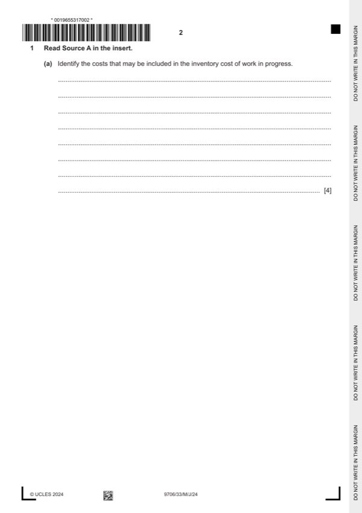

Question 1

Original paper page 2
Part 1(a) — solution
Identify the costs that may be included in the inventory cost of work in progress. 4
Costs of the purchases of direct materials (1)
Delivery cost (1)
Direct labour costs (1)
Variable production overheads (1)
Fixed production overheads (1)
Max 4
Accept other valid responses.
University Press & Assessment 2024 Page 7 of 15
9706/33 Cambridge International AS & A Level – Mark Scheme May/June 2024
Mark points
- Include the ideas shown in the solution above.
Part 1(b) — solution
Answer: 540 000
- $25 600/($89 600 – $25 600)=40% (1)
- 40% $535 000 = $214 000 (1)OF
Mark points
- $25 600/($89 600 – $25 600)=40% (1)
- 40% $535 000 = $214 000 (1)OF
Part 1(c) — solution
Answer: 389 000 · 255 700
- $25 600 – ($77 000 40/140) = $3 600 (1)
Mark points
- $25 600 – ($77 000 40/140) = $3 600 (1)
Part 1(d) — solution
Advise the directors whether or not they should incur expenditure on researching a new material. Justify your 5
answer.
For. Max (2)
New material may be of better quality (1).
This will reduce cost of wastage (1).
Can charge premium price for improved quality so that sales / revenue / profit can increase (1)
Ensures profitability is sustained in the long run / remains competitive (1)
Against. Max (2)
The research may fail (1)
Expenditure on research is written off in the year it is incurred (1) and this will greatly reduce the profit of that year (1)
Increased expenditure may increase prices causing loss of customers (1)
May need to be financed by loan and the loan interest will reduce profit (1)
Decision supported with a comment (1)
Accept other valid responses.
Mark points
- Include the ideas shown in the solution above.